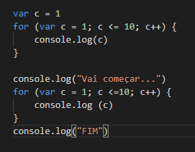

As duas figuras abaixo mostram a semelhança entre as estruturas while e for, elas tem exatamente a mesma funcionalidade, no entanto, quando o valor final é conhecido, ou seja, quando se conhece a extensão das repetições, é geralmente utilizada a estrutura for.
Exercício nodejs
